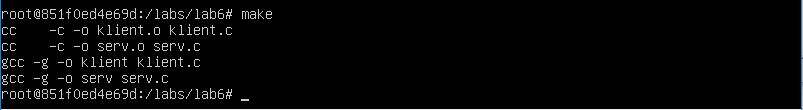
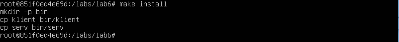

Работа №6. Сообщения. Разделяемая память. Семафоры.¶
Цель работы¶
Изучение системных вызовов для обмена данными между процессами.
Содержание работы¶
- Запустить операционную систему.
- Войти в виртуальную машину, контейнер или на удалённый сервер приложений (IP адресом XX.XX.XX.254, пользователь lxc<NN>, пароль спросить у преподавателя).
- Написать программу для обмена текстовыми сообщениями между процессами, с использованием механизма разделяемой памяти. Обеспечить синхронизацию обмена с помощью механизма семафоров.
- Написать makefile, обеспечивающий трансляцию, установку, очистку и удаление программы (см. лаб. 4)
- Оттранслировать программу и установить её в каталог bin каталога work с помощью команды make.
- Очистить каталог work от вспомогательных файлов с помощью команды make.
- Запустить оттранслированную программу.
- Представить результаты выполнения работы преподавателю.
Ход работы¶
Запускаем наш контейнер из предыдущих работ:
docker run -it konstantinov/abc-linux-4-1
Далее пишем код, позволяющий реализовать наши семафоры для отношений клиент-сервер:
Исходный код программы-сервера¶
#include <stdio.h>
#include <unistd.h>
#include <string.h>
#include <sys/ipc.h>
#include <sys/sem.h>
#include <sys/shm.h>
#define FTOKSEMPATH "/tmp/lab06sem" /*Путь к файлу, передаваемому ftok для набора семафоров */
#define FTOKSHMPATH "/tmp/lab06shm" /*Путь к файлу, передаваемому ftok для разделяемого сегмента */
#define FTOKID 1 /*Идентификатор, передаваемый ftok */
#define NUMSEMS 2 /* Число семафоров в наборе */
#define SIZEOFSHMSEG 512 /* Размер сегмента разделяемой памяти */
#define NUMMSG 20 /* Число принимаемых сообщений */
int main(int argc, char *argv[])
{
int ret_val, rc, semid, shmid, i;
key_t semkey, shmkey;
void *shm_address;
struct sembuf operations[2];
struct shmid_ds shmid_struct;
FILE *fp;
/*Создание файлов для ftok*/
fp=fopen(FTOKSEMPATH,"w");
fclose(fp);
fp=fopen(FTOKSHMPATH,"w");
fclose(fp);
/*Создание IPC-ключей*/
semkey = ftok(FTOKSEMPATH,FTOKID);
if ( semkey == (key_t)-1 )
{
printf("Сервер: ошибка при выполнении %s\n","semkey = ftok(FTOKSEMPATH,FTOKID);");
return -1;
}
shmkey = ftok(FTOKSHMPATH,FTOKID);
if ( shmkey == (key_t)-1 )
{
printf("Сервер: ошибка при выполнении %s\n","shmkey = ftok(FTOKSHMPATH,FTOKID);");
return -1;
}
/*Создание набора семафоров с помощью IPC-ключей*/
semid = semget( semkey, NUMSEMS, 0666 | IPC_CREAT | IPC_EXCL);
if ( semid == -1 )
{
printf("Сервер: ошибка при выполнении %s\n","semid = semget( semkey, NUMSEMS, 0666 | IPC_CREAT | IPC_EXCL);");
return -1;
}
/* В данной работе будет использоваться 2 семафора*/
/* 1 в первом означает что облать разделяемой памяти используется*/
/* 1 во втором, означает, что область разделяемой памяти изменена клиентом*/
/*Инициализация семафоров*/
ret_val = semctl( semid, 0, SETVAL, 0);
if(ret_val == -1)
{
printf("Сервер: ошибка при выполнении %s\n","ret_val = semctl( semid, 0, SETVAL, 0);");
return -1;
}
ret_val = semctl( semid, 1, SETVAL, 0);
if(ret_val == -1)
{
printf("Сервер: ошибка при выполнении %s\n","ret_val = semctl( semid, 1, SETVAL, 0);");
return -1;
}
/*Создание сегмента разделяемой памяти*/
shmid = shmget(shmkey, SIZEOFSHMSEG, 0666 | IPC_CREAT | IPC_EXCL);
if (shmid == -1)
{
printf("Сервер: ошибка при выполнении %s\n","shmid = shmget(shmkey, SIZEOFSHMSEG, 0666 | IPC_CREAT | IPC_EXCL);");
return -1;
}
/*Прикрепление сегмента разделяемой памяти, получение адреса*/
shm_address = shmat(shmid, NULL, 0);
if ( shm_address==NULL )
{
printf("Сервер: ошибка при выполнении %s\n","shm_address = shmat(shmid, NULL, 0);");
return -1;
}
printf("Сервер готов принимать сообщения от клиентов. Данный сервер настроен на прием %d сообщений\n", NUMMSG);
/*Цикл обработки сообщений. Выполняется NUMMSG раз*/
for (i=0; i < NUMMSG; i++)
{
/* Сервер ожидает появления 1 на втором семафоре (сегмент разделяемой памяти изменен клиентом) */
/* затем выставляет 1 на первом семафоре (сегмент занят) */
/**/
operations[0].sem_num = 1;
operations[0].sem_op = -1;
operations[0].sem_flg = 0;
operations[1].sem_num = 0;
operations[1].sem_op = 1;
operations[1].sem_flg = IPC_NOWAIT;
ret_val = semop( semid, operations, 2 );
if (ret_val == -1)
{
printf("Сервер: ошибка при выполнении %s\n","ret_val = semop( semid, operations, 2 );");
}
/*Обработать сообщение, полученное от клиента*/
printf("Получено сообщение : \"%s\"\n", (char *) shm_address);
/*Установить первый семафор в 0 (сегмент свободен)*/
operations[0].sem_num = 0;
operations[0].sem_op = -1;
operations[0].sem_flg = IPC_NOWAIT;
ret_val = semop( semid, operations, 1 );
if (ret_val == -1)
{
printf("Сервер: ошибка при выполнении %s\n","ret_val = semop( semid, operations, 1 );");
return -1;
}
} /* Конец цикла обработки сообщений */
/* Освобождние набора семафоров, */
/* открепление сегмента разделяемой памяти, */
/* его освобождение. */
ret_val = semctl( semid, 1, IPC_RMID );
if (ret_val==-1)
{
printf("Сервер: ошибка при выполнении %s\n","ret_val = semctl( semid, 1, IPC_RMID );");
return -1;
}
ret_val = shmdt(shm_address);
if (ret_val==-1)
{
printf("Сервер: ошибка при выполнении %s\n","ret_val = shmdt(shm_address);");
return -1;
}
ret_val = shmctl(shmid, IPC_RMID, &shmid_struct);
if (ret_val==-1)
{
printf("Сервер: ошибка при выполнении %s\n","ret_val = shmctl(shmid, IPC_RMID, &shmid_struct);");
return -1;
}
/*Удаление файлов для ftok*/
unlink(FTOKSHMPATH);
unlink(FTOKSEMPATH);
return 0;
}
Исходный код программы-клиента¶
#include <stdio.h>
#include <unistd.h>
#include <string.h>
#include <sys/ipc.h>
#include <sys/sem.h>
#include <sys/shm.h>
#include <sys/types.h>
#define FTOKSEMPATH "/tmp/lab06sem" /*Путь к файлу, передаваемому ftok для набора семафоров */
#define FTOKSHMPATH "/tmp/lab06shm" /*Путь к файлу, передаваемому ftok для разделяемого сегмента */
#define FTOKID 1 /*Идентификатор, передаваемый ftok */
#define NUMSEMS 2 /* Число семафоров в наборе */
#define SIZEOFSHMSEG 512 /* Размер сегмента разделяемой памяти */
#define NUMMSG 5 /* Число передаваемых сообщений */
int main(int argc, char *argv[])
{
struct sembuf operations[3];
void *shm_address;
int i, semid, shmid, ret_val;
key_t semkey, shmkey;
/*Создание IPC-ключей*/
semkey = ftok(FTOKSEMPATH,FTOKID);
if ( semkey == (key_t)-1 )
{
printf("Клиент: ошибка при выполнении %s\n","semkey = ftok(FTOKSEMPATH,FTOKID);");
return -1;
}
shmkey = ftok(FTOKSHMPATH,FTOKID);
if ( shmkey == (key_t)-1 )
{
printf("Клиент: ошибка при выполнении %s\n","shmkey = ftok(FTOKSHMPATH,FTOKID);");
return -1;
}
/*Получение набора семафоров с помощью IPC-ключей*/
semid = semget( semkey, NUMSEMS, 0666);
if ( semid == -1 )
{
printf("Клиент: ошибка при выполнении %s\n","semid = semget( semkey, NUMSEMS, 0666);");
return -1;
}
/*Получение сегмента разделяемой памяти*/
shmid = shmget(shmkey, SIZEOFSHMSEG, 0666);
if (shmid == -1)
{
printf("Клиент: ошибка при выполнении %s\n","shmid = shmget(shmkey, SIZEOFSHMSEG, 0666);");
return -1;
}
/*Прикрепление сегмента разделяемой памяти, получение адреса*/
shm_address = shmat(shmid, NULL, 0);
if ( shm_address==NULL )
{
printf("Клиент: ошибка при выполнении %s\n","shm_address = shmat(shmid, NULL, 0);");
return -1;
}
/*Цикл отправки сообщений. Выполняется NUMMSG раз*/
for (i=0; i < NUMMSG; i++)
{
/* Клиент ожидает появления 0 на первом семафоре (сегмент разделяемой памяти свободен) */
/* и 0 на первом семафоре (сегмент обработан сервером) */
/* затем выставляет 1 на первом семафоре (сегмент занят) */
/**/
operations[0].sem_num = 0;
operations[0].sem_op = 0;
operations[0].sem_flg = 0;
operations[1].sem_num = 1;
operations[1].sem_op = 0;
operations[1].sem_flg = 0;
operations[2].sem_num = 0;
operations[2].sem_op = 1;
operations[2].sem_flg = 0;
ret_val = semop( semid, operations, 3 );
if (ret_val == -1)
{
printf("Клиент: ошибка при выполнении %s\n","ret_val = semop( semid, operations, 2 );");
return -1;
}
snprintf( (char *) shm_address, SIZEOFSHMSEG, "Message from klient with pid=%d", getpid() );
usleep(200);
/* Установить первый семафор в 0 (сегмент свободен), */
/* второй семафор в 1 (сегмент изменен) */
operations[0].sem_num = 0;
operations[0].sem_op = -1;
operations[0].sem_flg = 0;
operations[1].sem_num = 1;
operations[1].sem_op = 1;
operations[1].sem_flg = 0;
ret_val = semop( semid, operations, 2 );
if (ret_val == -1)
{
printf("Клиент: ошибка при выполнении %s\n","ret_val = semop( semid, operations, 2 );");
return -1;
}
} /* Конец цикла отправки сообщений */
/*Открепление сегмента разделяемой памяти.*/
ret_val = shmdt(shm_address);
if (ret_val==-1)
{
printf("Клиент: ошибка при выполнении %s\n","ret_val = shmdt(shm_address);");
return -1;
}
return 0;
}
- Пишем Makefile::
- klient,serv: klient.o serv.o
- gcc -g -o klient klient.c gcc -g -o serv serv.c
- clean:
- rm -f klient serv klient.o serv.o
- install:
- mkdir -p bin cp klient bin/klient cp serv bin/serv
- uninstall:
- rm -rf bin
Транслируем программу:

{kind=link}
Запуск Makefile
Устанавливаем:

{kind=link}
Установка программы
Очистка:
{kind=link}
Далее мы запускаем оттранслированную программу:
$ cd bin
$ ./serv
Сервер готов принимать сообщения от клиентов. Данный сервер настроен на прием 20 сообщений
& ./klient & ./klient & ./klient & ./klient
Получено сообщение : "Message from klient with pid=33"
Получено сообщение : "Message from klient with pid=34"
Получено сообщение : "Message from klient with pid=32"
Получено сообщение : "Message from klient with pid=33"
Получено сообщение : "Message from klient with pid=35"
Получено сообщение : "Message from klient with pid=34"
Получено сообщение : "Message from klient with pid=32"
Получено сообщение : "Message from klient with pid=33"
Получено сообщение : "Message from klient with pid=35"
Получено сообщение : "Message from klient with pid=34"
Получено сообщение : "Message from klient with pid=32"
Получено сообщение : "Message from klient with pid=33"
Получено сообщение : "Message from klient with pid=35"
Получено сообщение : "Message from klient with pid=34"
Получено сообщение : "Message from klient with pid=32"
Получено сообщение : "Message from klient with pid=33"
Получено сообщение : "Message from klient with pid=35"
Получено сообщение : "Message from klient with pid=34"
Получено сообщение : "Message from klient with pid=32"
Получено сообщение : "Message from klient with pid=35"